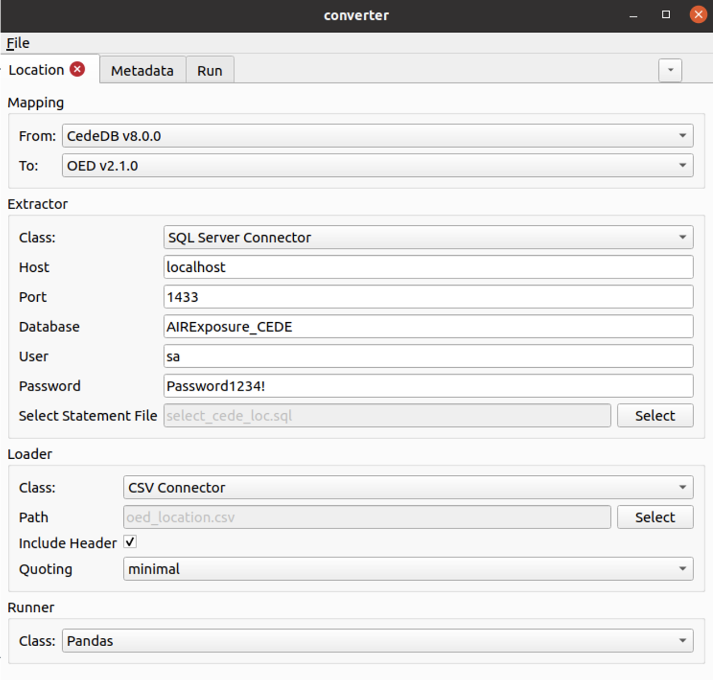

Executing a data transformation¶
A data transformation can be executed via the User Interface or the Command Line. Either method will allow to use flat file input data, or a database connection.
Either method will allow transformation of flat file data, or via SQL database connection.
Running ODTF via User Interface¶
The user interface is accessed by running a Windows-compatible executable file.
A user can load a configuration .yaml file, which will populate the fields in the UI.
Alternatively, you can configure the transformation entirely in the UI. These settings can be saved to a text config file for reference.
Enter on the Location, Account, and Reinsurance tabs: * Mapping: the source and destination mapping * Extractor: source data path or database connection * Loader: destination data path or database connection * Runner: pandas is used as the default
Enter portfolio metadata on the Metadata tab, and execute the transformation on the Run tab.
Template config, mapping and validation files are not provided in the executable package, and should be downloaded from GitHub and saved on your local machine.
{kind=link}
Running ODTF via Command Line¶
Running via the command line interface requires installation of the converter package from GitHub:
Pre-requisites:
To use the ODTF you will require:
Python version 3.8 or higher. To install Python, follow instructions at the Python For Beginners page.
To install the package via command line, you will require: the package pip.
It is recommended to install the package in a clean virtual environment.
Download and install:
The tool operates on a local installation only.
To install the package via command line (Mac OS, Linux, Windows):
Download the Python package from the project GitHub pages at github.com/OasisLMF/OpenDataTransform.
Install the Python package using
pip install git+https://github.com/OasisLMF/OpenDataTransform.git
The most basic command to run a transformation is converter -c <path to config file> run.
Command line usage:
Usage: converter [OPTIONS] COMMAND [ARGS]...
Initialises the cli grouping with default options.
Options:
-o, --option TEXT... Sets a configuration option, a path and value are
required eg -o extractor.options.foo.bar bash
-c, --config TEXT Path to the configuration file.
-v, --verbose Specifies the verbosity level, if used multiple times
the verbosity is increased further
--no-color Disables colorised output.
--help Show this message and exit.
Commands:
run Runs the data conversion
show-config Prints the resolved config to the console
Further information on configuration and command line use: